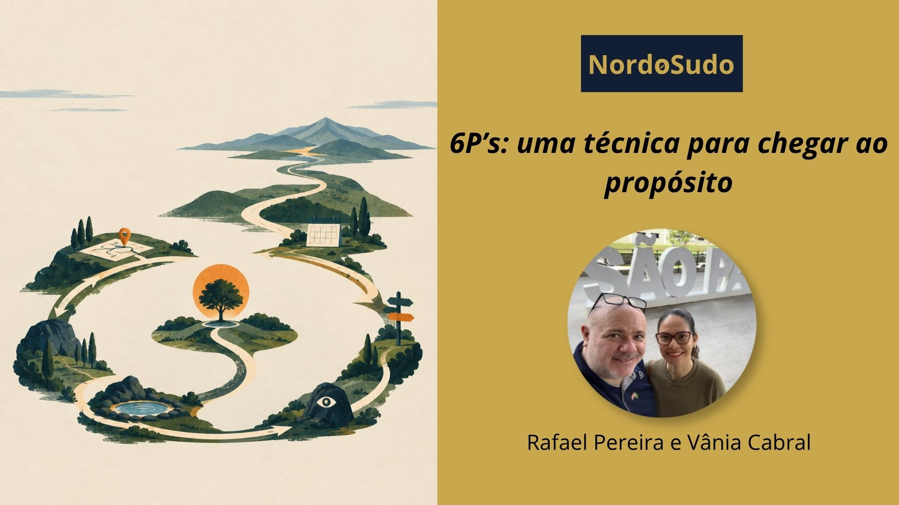

Redação: Rafael Guimarães Pereira | Revisão: Vânia Cristina Pereira Cabral
Técnicas existem para nos ajudar a fazer aquilo que precisa ser feito de maneira mais eficaz, com menos esforço, menor custo e melhores resultados. Mas, quando falamos de projetos e de evolução pessoal, talvez seja necessário pensar também em técnicas que nos ajudem a não perder de vista o propósito.
Os 6Ps foram desenvolvidos justamente para captar e trabalhar o ciclo de vida dos projetos de forma ampla: **Propósito, Planejamento, Programação, Priorização, Parapsiquismo e Ponderação.**
Podemos pensar os 6Ps em dois grandes momentos: a preparação, composta por planejamento, programação e priorização, e a execução, na qual entram priorização, parapsiquismo e ponderação.
Diante da vida, dos projetos e do trabalho, tudo começa pela definição de um propósito claro. A partir dele, fazemos um planejamento antecipado. Depois colocamos o plano no tempo, construindo o roadmap, que corresponde à programação. Com essa etapa preparatória concluída, embarcamos na execução.
Na execução, precisamos priorizar nossas ações. Essa priorização é norteada pelo uso lúcido do parapsiquismo, que pode nos permitir errar menos e tomar decisões com maior discernimento.
O teleguiamento autocrítico permite trabalhar ombro a ombro com os amparadores e acertar mais, maximizando os resultados interassistenciais do empreendimento.
Chegamos então à ponderação.
Ela pode ser entendida, em certa medida, como o momento de reflexão. No PDCA, teríamos algo próximo do *check*. Mas a ponderação, nos 6Ps, tem um significado mais profundo: ela se conecta novamente ao propósito para avaliarmos se estamos alinhados com ele e se as ações realizadas efetivamente nos levaram na direção pretendida.
Se os resultados foram plenamente atingidos, fechamos o projeto.
Se ainda não foram, voltamos ao planejamento para uma nova rodada, uma nova iteração.
É assim que acontece o ciclo virtuoso dos 6Ps: propósito, planejamento, programação, priorização, parapsiquismo e ponderação funcionando de maneira integrada, em um processo contínuo de ação, avaliação e retomada.
Talvez valha levar essa lógica também para além dos projetos profissionais.
Você já refletiu sobre seu propósito evolutivo e sobre como chegar lá? Já considerou utilizar técnicas evolutivas, como a técnica dos 6Ps, para transformar suas metas evolutivas em um processo mais consciente de planejamento, execução e avaliação?
#EmpreendedorismoEvolutivo #6Ps #EvoluçãoPessoal #Nordosudo